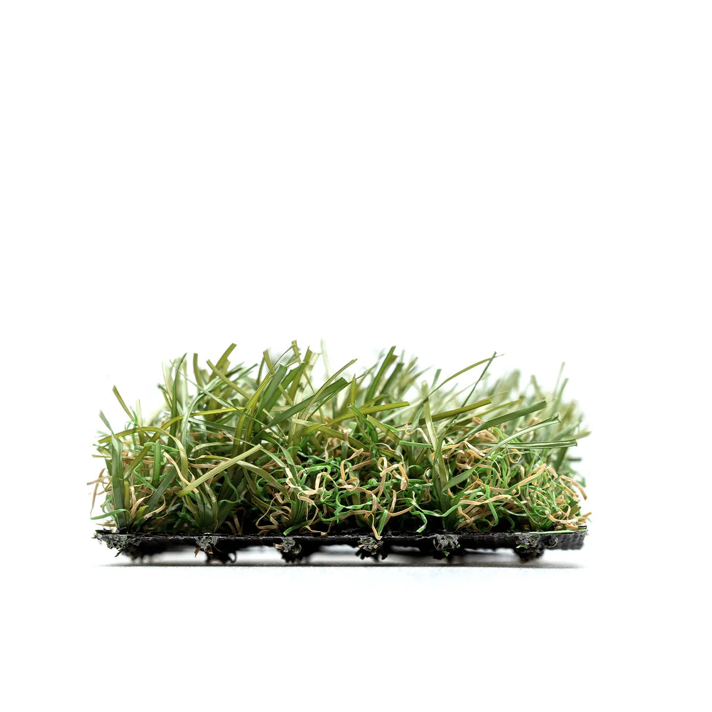

-19 %30 mmEl más vendido
JILGUERO
Aspecto de césped recién cortado. Ideal para jardines familiares y mascotas.
8,90 €/m²11,00 €IVA incl.

Lo fabricamos nosotros. Instálalo tú con nuestras guías y muestras gratis, o deja que lo midamos e instalemos nosotros.
Elige modelo, pide muestras gratis y te lo cortamos a medida.
Medimos, presupuestamos e instalamos con equipo propio.
Lo fabricamos nosotros. Tú decides si lo instalas tú o lo instalamos nosotros.

Elige entre seis modelos desde 8,90 €/m², pide muestras gratis y te lo cortamos a medida. Con guías y vídeos para cada superficie.
Ver modelos y pedir muestras
Medimos, presupuestamos e instalamos con equipo propio en 10 ciudades. Precio cerrado y 10 años de garantía en producto e instalación.
Pedir presupuesto gratisLos fabricamos nosotros, con 10 años de garantía. Estos son los tres más pedidos. Pide muestras gratis y compáralos en casa antes de decidir.

-19 %30 mmAspecto de césped recién cortado. Ideal para jardines familiares y mascotas.
 Oferta40 mm
Oferta40 mmMullido y generoso. Para zonas de descanso, terrazas y piscinas.
 45 mm
45 mmEl más suave y mullido. Densidad extraordinaria, fibras siempre erguidas.
Zonas de mucho paso, mascotas y limpieza fácil. Jilguero y Ruiseñor.
El equilibrio entre suavidad y resistencia. Kiwi, Cuco y Albatros.
Máxima suavidad para descansar descalzo. Flamenco.
En Keepgreen fabricamos el césped artificial que vendemos. Por eso podemos darte un precio por metro cuadrado sin intermediarios, cortarlo a la medida exacta de tu jardín, terraza o balcón y garantizarlo durante 10 años. Seis modelos, de 30 a 45 mm de fibra, pensados para el uso real de una casa: niños, mascotas, piscina y sol todo el año.
La altura de la fibra marca la sensación al pisar; la densidad y la memoria, lo bien que se recupera. Para mascotas y zonas de paso recomendamos 30 mm; para terrazas y jardines de uso mixto, 35 o 40 mm; y si lo que buscas es tumbarte descalzo, 45 mm. Las muestras gratis llegan en 24/48 h para que lo compruebes al sol y a la sombra.
Por eso lo instalamos con equipos propios, no con subcontratas. Nos cuentas tu espacio, te llamamos en 24 h y te damos precio cerrado con instalación.
Dos minutos en el formulario, o una llamada. No hace falta tener los metros exactos.
Un asesor te recomienda modelo y cerramos precio con visita o por planos.
Preparación del terreno, drenaje, uniones y acabado. 10 años de garantía en producto e instalación.
«Nos lo instalaron en dos días. Vinieron a medir, nos dieron precio cerrado y no hubo ninguna sorpresa. El jardín parece de verdad».
Carmen L.Málaga · Jardín 60 m² · Instalado por Keepgreen«Pedí muestras un lunes y el miércoles ya las tenía en casa. Elegimos el Albatros para la terraza y lo puse yo siguiendo sus vídeos».
Javier M.Madrid · Terraza 18 m² · Lo instaló él«Tenemos dos perros y era lo que más nos preocupaba. Con el Jilguero, un cepillado de vez en cuando y cero barro en casa».
Marta R.Alicante · Jardín 40 m² · Instalado por Keepgreen
Verde todo el año sin regar, sin cortar y sin barro. Para un jardín de uso diario recomendamos 30 o 35 mm si hay mascotas y mucho paso, y 40 o 45 mm si lo que quieres es una zona para tumbarte. Lo cortamos a medida o lo instalamos nosotros con preparación del terreno y drenaje.

Sobre baldosa o cemento se instala en una tarde: se corta a medida, se fija con cinta o adhesivo y listo. Elige un modelo con buen drenaje para que la lluvia no se acumule, y 35 o 40 mm para que sea agradable descalzo. Enviamos en 24/48 h en anchos de 1 y 2 metros.
Nada de barro ni hierba cortada en el agua. Nuestros modelos aguantan el cloro, la sal y el sol directo, y drenan rápido para que no resbale. Para el borde de la piscina funcionan muy bien Albatros y Kiwi: suaves para pisar mojado y fáciles de limpiar.

Una superficie blanda, limpia y sin alergias al polen para jugar todo el año. Los modelos de 40 y 45 mm amortiguan las caídas y no se calientan tanto en verano. Todos nuestros céspedes están libres de sustancias nocivas y se limpian con agua.

Se acabó el barro en casa y las calvas en el jardín. Para perros recomendamos fibra corta y densa, 30 mm, con drenaje alto: la orina se filtra, se limpia con agua y un cepillado ocasional lo deja como nuevo. Jilguero y Ruiseñor son los favoritos de nuestros clientes con mascotas.
Y si tu duda no está aquí, llámanos al 965 403 811 o escríbenos por WhatsApp.
Depende del modelo, los metros y la superficie actual (tierra, cemento o baldosa). Como orientación, el césped va de 8,90 a 23,50 €/m² y la instalación con preparación del terreno se presupuesta aparte. Te damos precio cerrado en 24 h, sin compromiso.
Tenemos instaladores propios en Alicante, Almería, Barcelona, Castellón, Madrid, Málaga, Murcia, Sevilla, Valencia y Zaragoza y sus alrededores. Si vives en otra zona, te enviamos el césped a casa y te acompañamos por teléfono para que lo instales tú o tu instalador de confianza.
Sí. Sobre baldosa o cemento es muy sencillo; sobre tierra hay que preparar la base y compactar. Tienes guías y vídeos paso a paso para cada superficie, y te lo cortamos a medida en anchos de 1 o 2 metros para que no sobre nada.
Las muestras son gratis y llegan en 24/48 h. Los pedidos al corte salen en 24/48 h y el envío es gratis a partir de 160 €. Si lo instalamos nosotros, la fecha se cierra en la llamada.
Un cepillado ocasional y retirar hojas. Con mascotas, un limpiador higienizante de vez en cuando. No se riega, no se corta y no se abona.
La pérdida de color por el sol y el deterioro de la fibra con un uso normal. Como fabricantes, respondemos nosotros, sin intermediarios. Si lo instalamos nosotros, la garantía cubre también la instalación.
Keepgreen fabrica césped artificial para el hogar desde Alicante. Controlar la fabricación nos permite ofrecer un precio directo de fábrica, cortar a medida y responder de la garantía de 10 años sin intermediarios. Tenemos centros en diez ciudades donde puedes ver y tocar el césped antes de decidir.
Instalamos con equipos propios en Alicante, Almería, Barcelona, Castellón, Madrid, Málaga, Murcia, Sevilla, Valencia y Zaragoza. Medimos, preparamos el terreno, resolvemos el drenaje y las uniones, y te damos precio cerrado antes de empezar. En el resto de España te enviamos el césped y te asesoramos para que lo instales tú.
Seis modelos de 30 a 45 mm, al corte o en rollo, con muestras gratis en 24/48 h y envío gratis a partir de 160 €. Césped artificial para jardín, terraza, balcón, piscina, niños y mascotas, con el asesoramiento por teléfono de quien lo fabrica.